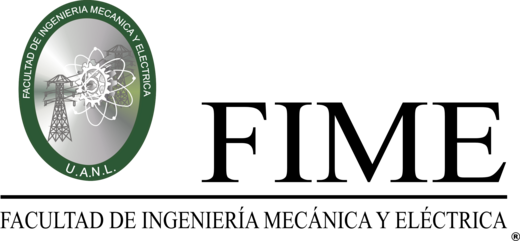

Misión
Realizar investigación, formación de recursos humanos y desarrollo tecnológico acerca de sistemas mecatrónicos.

Facultad de Ingeniería Mecánica y Eléctrica
Universidad Autónoma de Nuevo León
Cuerpo académico consolidado · Registro UANL-CA-272 · PRODEP-SEP

El CATIM es un cuerpo académico adscrito a la FIME, con número de registro UANL-CA-272, reconocido por el Programa para el Desarrollo Profesional Docente (PRODEP) de la SEP con nivel Consolidado.
Está formado por profesores-investigadores con reconocimiento nacional, que cuentan con productos de investigación de calidad, amplia experiencia en docencia y en formación de recursos humanos, y un alto compromiso con la institución. Colaboramos entre nosotros, con nuestros estudiantes y con otros investigadores.
Realizar investigación, formación de recursos humanos y desarrollo tecnológico acerca de sistemas mecatrónicos.
Ser un cuerpo académico consolidado, reconocido por su contribución en investigación, desarrollos tecnológicos y en la formación de recursos humanos.
Las líneas de investigación se asocian a proyectos, actividades o estudios que profundizan en el conocimiento, con objetivos y metas de carácter académico, orientados a aplicaciones innovadoras en beneficio de la sociedad. Uno de los principales objetivos del CATIM es realizar investigación científica en áreas afines a la mecatrónica.
Por ejemplo: sistemas biomecatrónicos para restaurar funciones neuromotrices, análisis y control de sistemas de alta dimensión o de dinámica no lineal altamente compleja, análisis de biomecánica articular, diseño e implementación de dispositivos de asistencia, diseño de esquemas de control de mecanismos articulados, instrumentación, procesamiento de señales electrofisiológicas y diseño de interfaces cerebro-computadora, entre otros.
Por ejemplo: autonomía, navegación y toma de decisiones en vehículos autónomos, enjambres de robots, algoritmos bioinspirados, análisis y control de robots, visión por computadora, inteligencia artificial aplicada a la toma de decisiones en robótica y sistemas autónomos, entre otros.
Análisis, estimación, control e instrumentación en sistemas dinámicos, robótica y biomecatrónica.
Desarrollo de modelos in silico orientados a paciente, diseño de sistemas fisiológicos de control y dispositivos médicos.
Modelado y optimización con sistemas inteligentes, máquinas de aprendizaje autónomo e inteligencia artificial.
Robótica de enjambres, sistemas autónomos y aplicaciones con inteligencia artificial.
¿Te interesa colaborar, realizar una estancia o conocer más sobre nuestras líneas de investigación? Escríbenos.
Escribir por correo